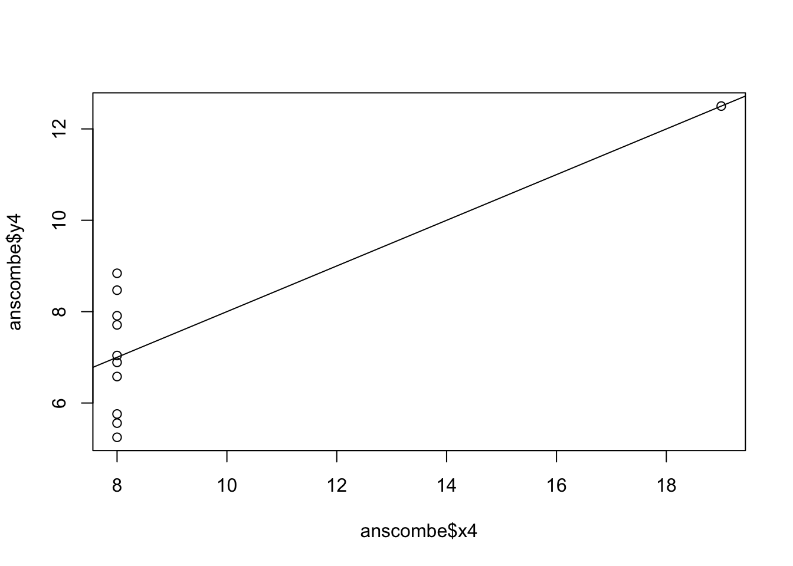
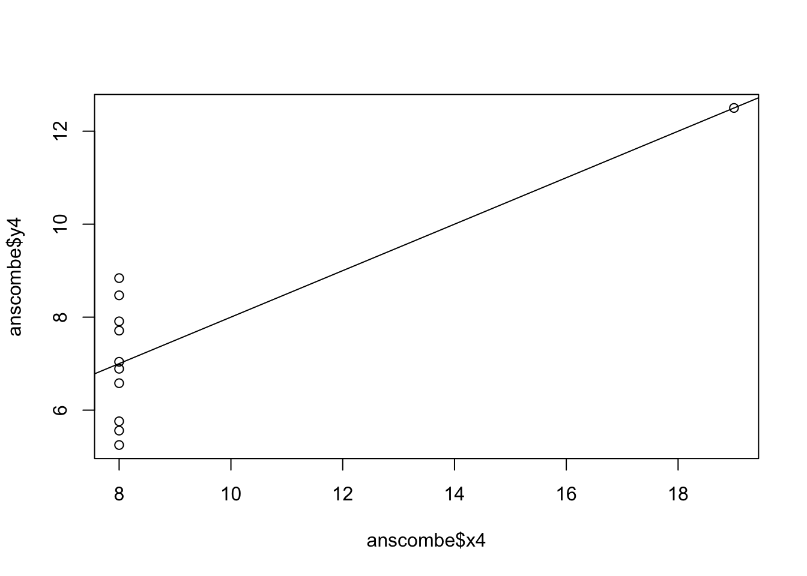

Brunner, Katharina. Generative art written in R. 3 Dec. 2018. When Two Points on a Circle Form a Line,https://katharinabrunner.de/2018/12/when-two-points-on-a-circle-form-a-line/

Naon, Manolo Gamboa. VVRRR. 26 Apr. 2018. Manolo Gamboa Naon, Behance.Net, https://www.behance.net/gallery/64930903/VVRRR.

Navarro, Danielle. 2021. “Generative Art Resources in R.” October 19, 2021. https://blog.djnavarro.net/posts/2021-10-19_rtistry-posts/

This graph is supposed to depict the welfare spending per day and per hour on every household in poverty. This graph was used in a political argument by Republican senator Jeff Sessions. There are several reasons why this graph is misleading and doesn’t serve as an accurate visualization of the data.
Firstly, the chart excludes a large amount of context; there is no visible information about what types of welfare programs are being included or excluded from these statistics. The news article states that when doing the calculations for this chart, Sessions and his team included a wide variety of programs, including Medicaid, food stamps, and several other means-tested programs aimed at those with low incomes; he even includes health benefits given through an employer. The calculations also did not take into account the fact that many individuals who are not in poverty also benefit from these programs, but they are not included in the data shown in the chart. By not strictly defining what constitutes a welfare program and by not including a significant portion of welfare recipients in these data, Sessions has inflated the figure of $168 per day of welfare spending for those in poverty. Another issue is the fact that the chart is also comparing the welfare spending to median income; however, the median income does not include health benefits given by an employer, while Sessions’ calculation of the welfare spending does factor in those health benefits. This is an inaccurate and misleading comparison, especially given the argument Sessions is making and the way the chart is constructed to show the two amounts side by side.
In addition, the chart only shows these two dollar amounts - welfare spending per day and per hour, as compared to the median income per day and per hour. All parts of the chart, including axes, labels, and the graphed data as well, are very elementary and basic. Even the subtitle includes the inaccurate comparison to median income.
While the chart is simple to look at, it doesn’t convey anything meaningful; we don’t know what is considered a welfare program for these data, we don’t know from which or from how many individuals this data was gathered, and we don’t know when this data was collected. Readers can not trust the message that this graph is presenting without having access to the full context of the data. Considering all of these factors, we can assert that this chart is misleading and doesn’t effectively visually represent the data.